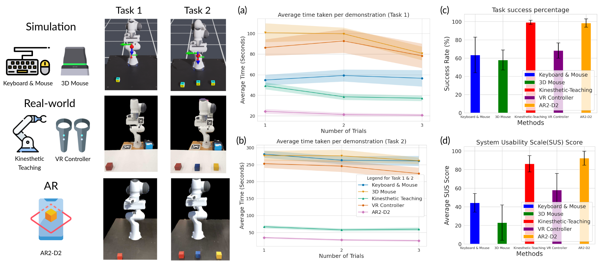

AR2-D2
A novel system for scaling up robot demonstration collection
We designed AR2-D2 as an iOS application, which can be run on an iPhone or iPad. Since modern mobile devices and tablets come equipped with in-built LiDAR, we can effectively place AR robots into the real world. The phone application is developed atop the Unity Engine and the AR Foundation kit. The application receives camera sensor data, including camera intrinsic and extrinsic values, and depth directly from the mobile device's built-in functionality. The AR Foundation kit enables the projection of the Franka Panda robot arm's URDF into the physical space. To determine user's 2D hand pose, we utilize Apple's human pose detection algorithm. This, together with the depth map is used to reconstruct the 3D pose of the human hand. By continuously tracking the hand pose at a rate of 30 frames per second, we can mimic the pose with the AR robot's end-effector.

Given language instructions describing a task (e.g.~``Pick up the plastic bowl''), we hire users to generate demonstrations using AR2-D2. From the user-generated demonstration video, we generate training data that can be used to train and deploy on a real robot. To create useful training data, we convert this video into one where it looks like an AR robot manipulated the object. To do so, we segment out and eliminate the human hand using Segment-Anything. We fill in the gap left behind by the missing hand with a video in-painting technique known as E2FGVI. Finally, we produce a video with the AR robot arm moving to the key-points identified by the user's hand. This final video processed video makes it appear as if an AR robot arm manipulated the real-world object; it can used as training data for visual-based imitation learning. Additionally, since we have access to the scene's depth estimation, we can also generate a 3D voxelized representation of the scene and use it to train agents like Perceiver-Actor.
Results
We conducted a user-study with (N=10) subjects and found out that AR2-D2 are significantly faster than 4 other conventional interfaces of collecting robot demonstrations for both in simulation and real-world. 
We also compared the data collected by AR2-D2 with a few other baseline approaches, and found that demonstrations collected via AR2-D2 yields useful representation for training a real-robot and also demonstrations collected via AR2-D2 train policies as accurately as demonstrations collect from a real robot.

Ablation Studies
Demonstrations vs Iterations for fine-tuning
We perform a diagnostic analyze on the number of demonstrations and iterations require to ground the pre-trained AR data to the real robot deployment environment. We found that 5 Demos and 3,000 Iterations (equivalent to 10 minutes of training) yields the optimal result.
2D data vs 3D data for training
AR2-D2 demonstrations store 2D image and 3D depth data, facilitating training of image-based behavior cloning (Image-BC) and 3D voxelized methods. With fixed camera calibration offset and no fine-tuning during training, 3D-input agents outperform 2D counterparts. We evaluated their performance on three tasks.